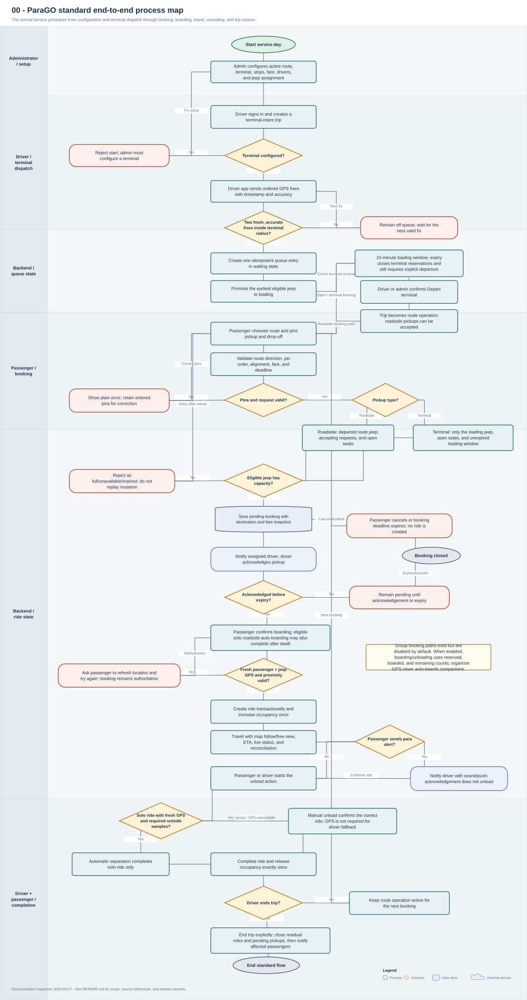
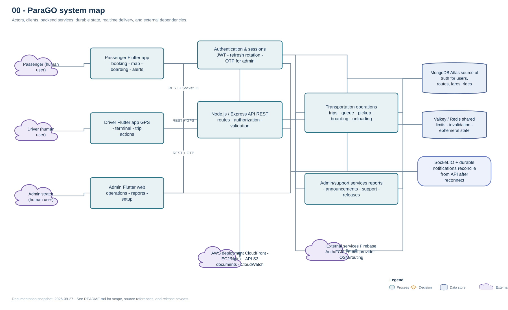
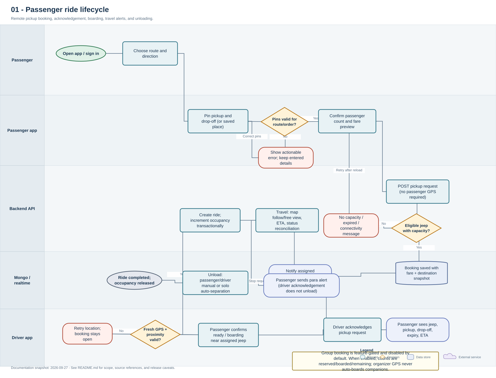
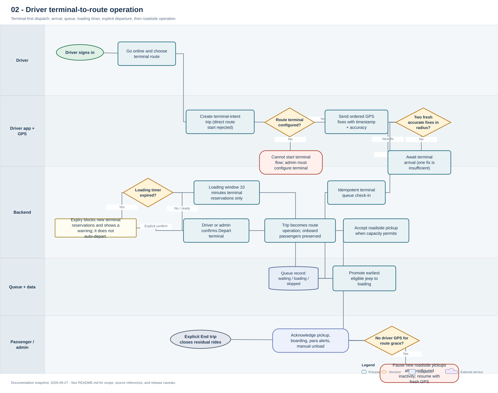
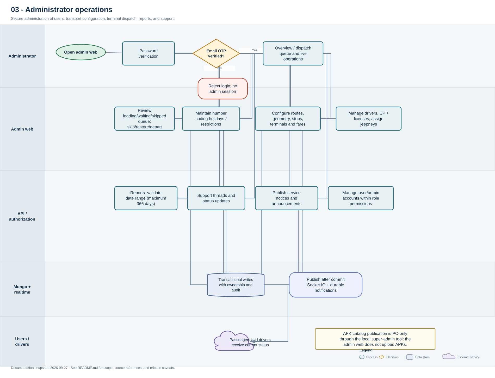

Primary process map. The arrows show the standard procedure; side branches show validation failures, expiry, cancellation, and retry behavior. Terminal booking and roadside booking converge at the authoritative booking and ride flow.

Actors and system boundaries. The API and MongoDB state are authoritative; realtime channels deliver updates and clients reconcile on reconnect.

Remote pickup booking does not require passenger GPS. Actual boarding still requires the configured fresh-location and proximity checks.

Direct route start is rejected for new flows. Departure is explicit and does not automatically unload onboard passengers.

Mobile APK catalog publication remains a separate PC-only local super-admin operation.
Scope and source notes
This documentation describes the current repository implementation as of 2026-09-27. Group booking paths exist but remain disabled by default behind GROUP_BOOKINGS_ENABLED=false. Existing terminal-first changes still have audit, maintenance-window, client/device, and deployment gates; this folder does not claim production readiness.
Source references are listed in README.md. Existing diagram folders were not modified.